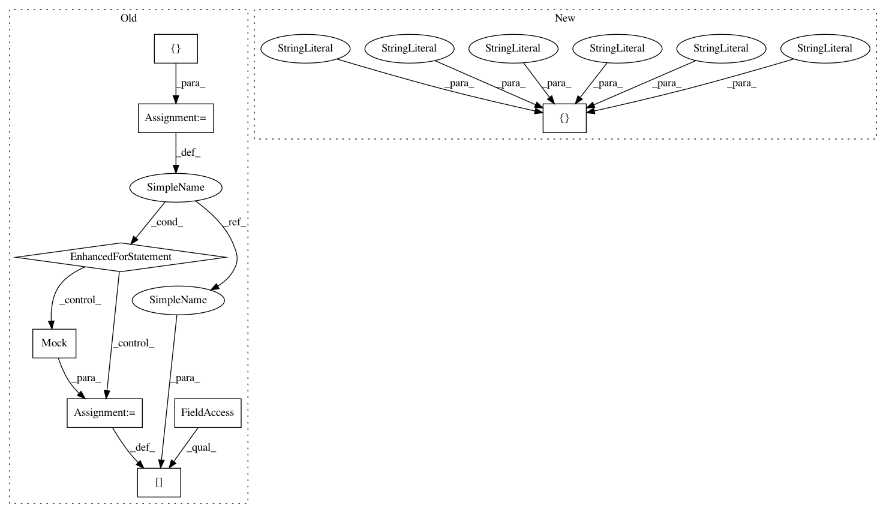

a9c9dae9f096e69aadc2c2b255c2e49dc02d5ed7,doc/source/conf.py,,,#,35
Before Change
autoclass_content = "both"
MOCK_MODULES = ["scipy", "scipy.stats", "pyNN"]
for mod_name in MOCK_MODULES:
sys.modules[mod_name] = mock.Mock()
sys.path.append(os.path.abspath("../.."))
// Do the rst generation
for f in os.listdir("."):
After Change
"special-members": "__call__"
}
// Some packages need mocking
autodoc_mock_imports = [
"_tkinter", "scipy", "scipy.stats", "matplotlib",
"pyNN", "pyNN.random", "pyNN.common", "neo"]
def filtered_files(base, excludes=()):
excludes = set(base + "/" + e for e in excludes)
In pattern: SUPERPATTERN
Frequency: 3
Non-data size: 8
Instances
Project Name: SpiNNakerManchester/sPyNNaker
Commit Name: a9c9dae9f096e69aadc2c2b255c2e49dc02d5ed7
Time: 2021-02-23
Author: donal.k.fellows@manchester.ac.uk
File Name: doc/source/conf.py
Class Name:
Method Name:
Project Name: SpiNNakerManchester/sPyNNaker
Commit Name: a9c9dae9f096e69aadc2c2b255c2e49dc02d5ed7
Time: 2021-02-23
Author: donal.k.fellows@manchester.ac.uk
File Name: doc/source/conf.py
Class Name:
Method Name:
Project Name: J535D165/recordlinkage
Commit Name: 848f445bc3f0bb96641a69b09dea5d62773cc551
Time: 2018-07-24
Author: jonathandebruinhome@gmail.com
File Name: docs/conf.py
Class Name:
Method Name:
Project Name: J535D165/recordlinkage
Commit Name: 9340f01b74101c63c7723654b79fc766ad70bbe4
Time: 2017-01-22
Author: jonathandebruinhome@gmail.com
File Name: docs/conf.py
Class Name:
Method Name: